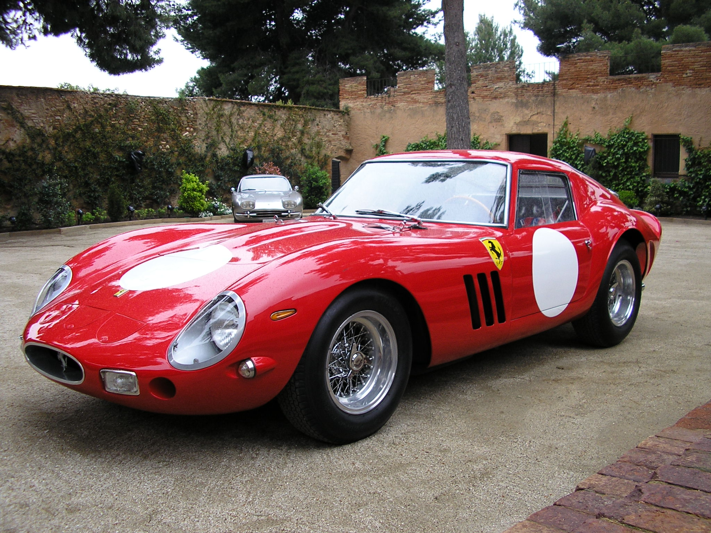
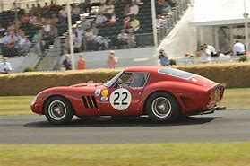
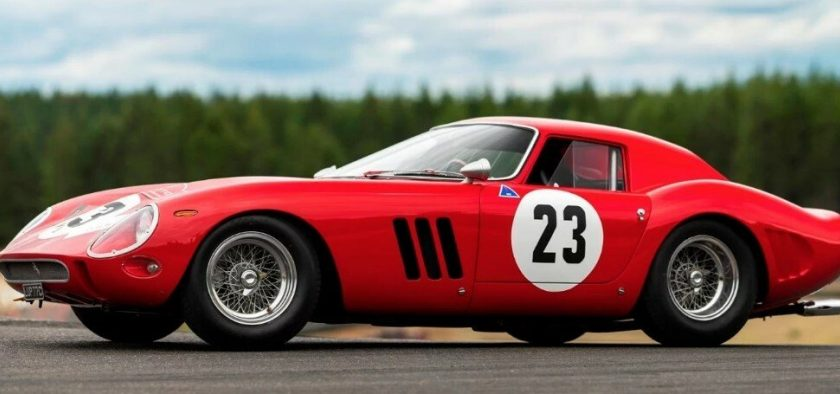
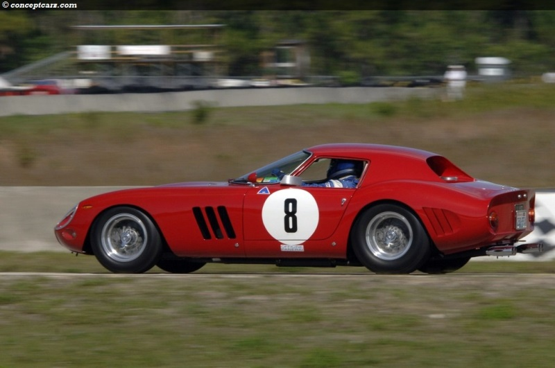
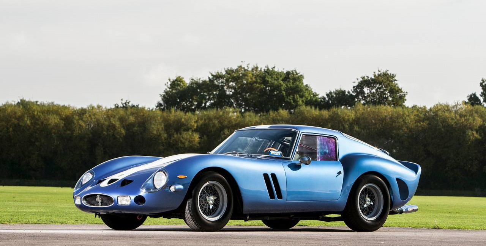
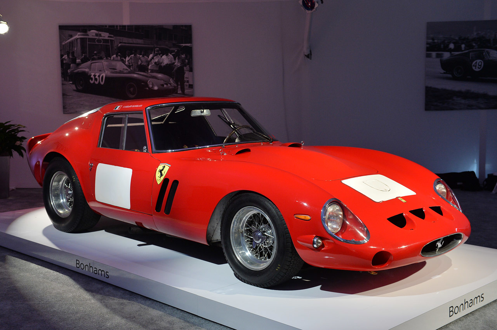
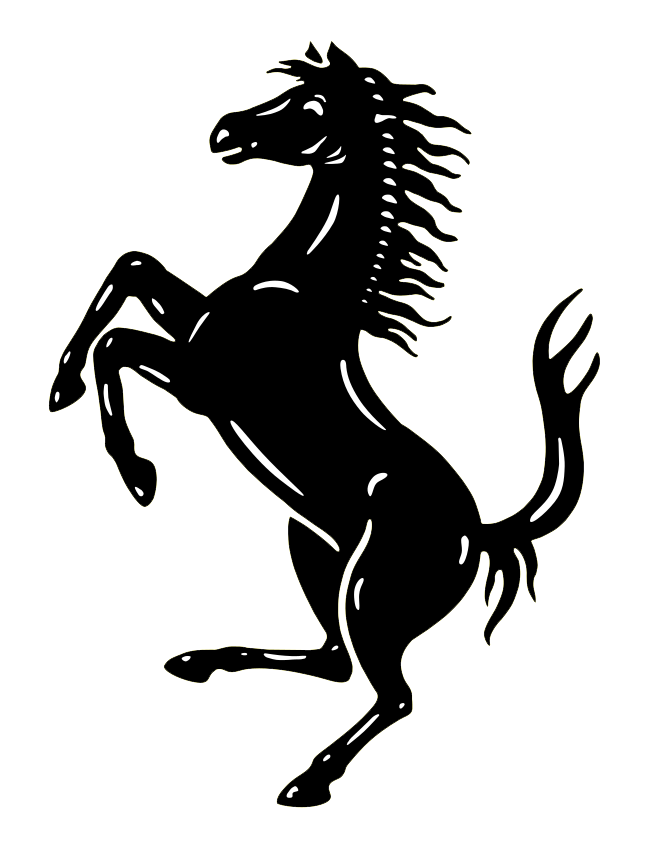

Ferrari 250 GTO
Az GTO 250 keletkezése
A Ferrari 250 GTO egy GT -autó , amelyet a Ferrari 1962 és 1964 között gyártott, Giotto Bizzarrini és Sergio Scaglietti tervei alapján.
A 250 GTO-ból mindössze 36-ot gyártottak 1962 és 1964 között. Az autó olyan ritka volt, hogy eladásokat Enzo Ferrari személyesn hagyta jóvá.

Tulajdonságok
| Motor | 2953 cc Tipo 168 Comp/62 60º V12 |
| Teljesítmény | 300LE |
| Terjedés(sebváltó) | 5 sebességes |
| Tömeg | 880-950 kg |
| Méretek |
|---|
| Hossz | 4325 mm |
| Szélesség | 1600 mm |
| Magasság | 1210 mm |
| Tengelytávolság | 2400 mm |
Versenyzés
Ezt a ferrarit kifejezetten versenyzés céljából fejlesztették ki. Debütálása az 1962-es 12 órás sebringi versenyen történt, ahol a GT kategóriában első helyet értek el.
A Ferrari 1962-ben, 1963-ban és 1964-ben megnyerte az FIA GT-gyártók nemzetközi bajnokságának több mint 2000 köbcentis osztályát, a 250-es GTO-val.
Emellett megyerte még az 1963-as és 1964-es Tour de France Automobile-t is.
Nem sok olyan modell volt amelyik tudta tartani a tempót a Ferrarival.
Ezek az autók voltak:
- a Jaguar E-type

- az Aston Martin DB4 GT Zagato
- az Aston Martin DP212
- az Aston Martin DP214
- az Aston Martin DP215
- az AC Cobrák avagy Shelby Cobrák
Gyűjtők álma
Az 1960-as évek végén és az 1970-es évek legelején csak egy egyszerű használt versenyautó volt azonban ma vitathatatlanul a világ legértékesebb gyűjtőautója.az 1980-as évek végérea 250 GTO lett a legértékesebb Ferrari modell.
Az 1990-es évek után rohamosan növekedni kezdtek az árak, 2018 a Ferrari 250 GTO #4153GT lett a világ legdrágábban eladott autója.
Az öt legdrágábban eladott példány
- A lista első helyén a Ferrari 250 GTO #4153GT amely 2018-ban mindössze 70 millió dollárért kelt el.

- A második helyen 2013-ban 52 millióért a Ferrari 250 GTO #5111GT 
- 48 millió 405 ezer dollárért került eladásra 2018-ban a Ferrari 250 GTO #3413GT 
- 44 millióért 2017-ben lett eladva a Ferrari 250 GTO #3387GT 
- az ötödik pozíciót a Ferrari 250 GTO #3851GT foglalja el, 38 millió 115 ezer dollárral. 
250 GTO a heyekben

Ferrari honlap
Wikipédia